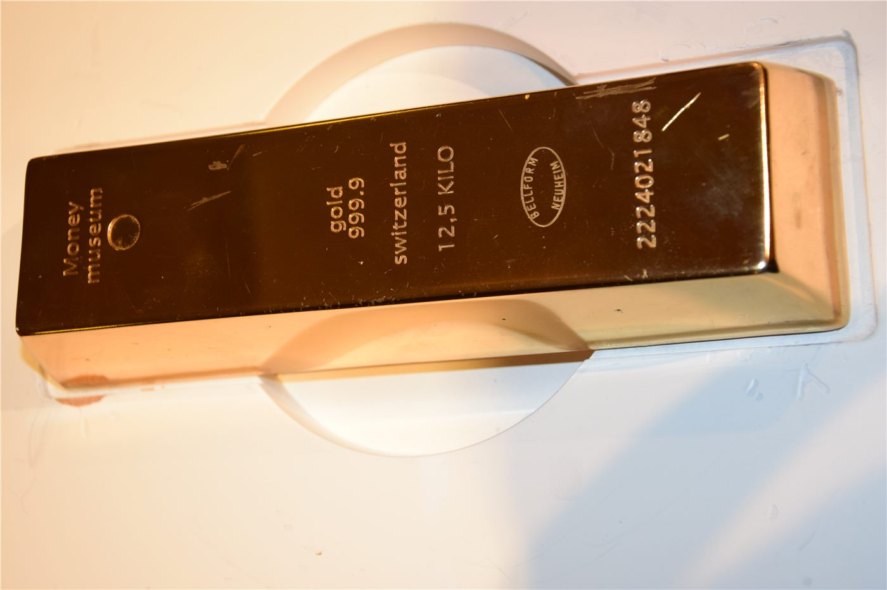

中 상반기 외환시장 ‘안정’ 운영… 거래 활발·복원력 강화
중국의 올해 상반기 외환시장이 전반적으로 안정적으로 운영됐다고 환구망이 전했다. 거래가 활발해지고 시장의 복원력이 강화됐다는 평가다.
여년재 기자 · 2026.07.20
橋중국

환구망은 상반기 중국 외환시장이 큰 충격 없이 안정적 흐름을 유지했다고 보도했다. 대외 불확실성이 여전한 가운데서도 거래 규모가 늘고, 변동에 대응하는 시장의 힘이 커졌다는 것이다.
광고 문의 · 300×250외환시장 안정은 수출입 기업의 결제와 환위험 관리에 직접적인 영향을 준다. 환율의 급격한 출렁임이 줄면 무역과 투자의 예측 가능성이 높아진다.
당국은 시장 원리에 따른 환율 형성과 과도한 변동 억제라는 두 축을 병행하고 있다고 설명했다. 거래 참여자의 위험 관리 수단이 다양해진 점도 안정 요인으로 꼽힌다.
華橋時報는 이 사안을 경제·통화 흐름의 하나로 중립적으로 전한다. 중국과 거래하거나 위안화 결제를 이용하는 화인 기업·상공인에게 외환시장의 안정성은 실무적으로 중요한 배경 정보다.
출처·참고 (사실 확인용 — 본문은 직접 재작성)
· 環球網 (huanqiu.com)
· 環球網 (huanqiu.com)